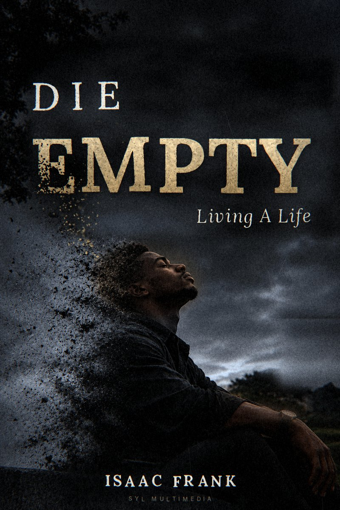

Writing & Communication
Creative writing, poetry, research, storytelling and communicating ideas with clarity and purpose.
IDEAS · PEOPLE · POSSIBILITIES
I'm Isaac Frank, professionally known as Sir Frank — a Nigerian writer, poet, industrial extensionist, tutor and mind advocate passionate about knowledge, human potential, meaningful learning and ideas that inspire growth.

GET TO KNOW ME
I am an industrial extensionist with an interest in knowledge sharing, enterprise development, innovation and the practical application of ideas to support meaningful development.
Beyond industrial extension, I am a writer, poet, tutor and mind advocate. I believe in the power of education to transform perspectives, writing to communicate ideas, and intentional thinking to help people recognise and develop their potential.
Through teaching, creative expression, communication and continuous learning, I seek to contribute to conversations and experiences that encourage growth, strengthen understanding and inspire purposeful living.
AREAS OF INTEREST & PRACTICE
Creative writing, poetry, research, storytelling and communicating ideas with clarity and purpose.
Knowledge sharing, enterprise development, innovation and exploring practical solutions to development challenges.
Making knowledge accessible, supporting learners, encouraging curiosity and helping people develop their abilities.
Promoting intentional thinking, personal growth and human potential through ideas, photography and creative expression.
03 — BOOKS

NEW · PERSONAL DEVELOPMENT
Living A Life
A reflection on living with intention, discovering the depth of one's potential, and giving meaning to the gift of life. Don't leave your purpose buried in you. Give what you carry before the grave asks for it.
BOOK · WRITING
A collection shaped by reflection, observation, questions, and the many conversations that happen within the mind.
Read the e-book ↗IDEAS TAKING FORM
BOOK · PERSONAL DEVELOPMENT
A reflection on living intentionally, recognising one's potential and making meaningful use of the life one has.
Read DIE EMPTY ↗BOOK · WRITING
A collection shaped by reflection, observation, questions, and the many conversations that happen within the mind.
Read E-book ↗RESEARCH · ENTREPRENEURSHIP
Ongoing exploration of the constraints facing micro, small, and medium enterprises and the opportunities for innovation.
PROJECT · BUSINESS EDUCATION
An educational project explaining the differences between the selling concept and the marketing concept.
View project ↗EXPERIENCE & MILESTONES
Great Faith Excels / Growing Cedars Academy, Ile-Ife.
Livestock Feeds (LSF) Plc, Ikeja, Lagos.
Poetry City competition.
Obafemi Awolowo University, B.Sc. Entrepreneurship and Industrial Extension (in view).
A PERSONAL PHILOSOPHY
“The greatest form of seclusion is by renewing the mind.”— SIR FRANK
GOOD IDEAS GROW THROUGH CONVERSATION
I'm open to meaningful conversations, collaborations, learning opportunities, tutoring engagements, and projects built around ideas and impact.
Send me an email ↗